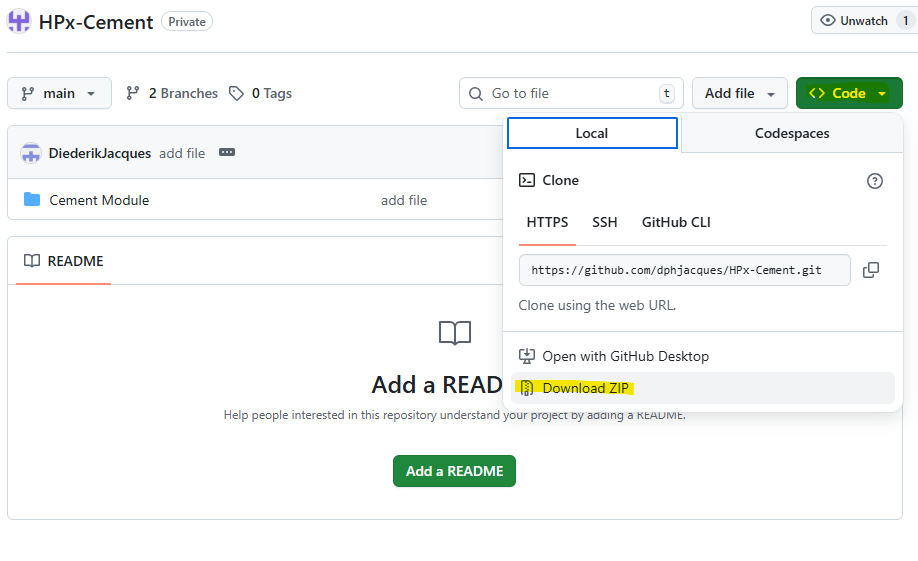
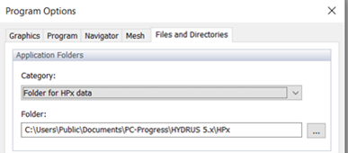
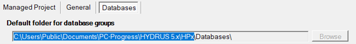

Tutorial ‑2 Install cement module
Description
To add the cement module to HPGeochemistry and the HYDRUS transport codes
You will learn to
Add a module to HPGeochemistry
Step 1 – Download Cement Module
Go to the github repository via link
Download the repository via Code and Download ZIP

Step 2 – Find the general folder for Modules
The folders and files under Cement Module should be placed in the default Module folder of HPx/HYDRUS 5.x. It can then be used it in different projects.
The default folder can be found via
(i) HYDRUS 5.0 GUI
Go to Options->Program Options…
Go to Files and Directories tab
Change the Category of the Application Folders to Folder for HPx data

or
(ii) HPGeochemistry GUI
Go to Settings and Preferences 
Go to the Settings tab
Go to the Databases subtab
The folder in the textbox “Default folder for database groups” indicates the default folder for databases. The parent folder gives also the path to subfolder Modules. Thus, in case you see

When HDYRUS 5.x is installed, the default folder for modules is:
C:\Users\Public\Documents\PC-Progress\HYDRUS 5.x\HPx\Modules
When a stand-alone version of HPGeochemistry is installed, the default folder for modules is:
Step 3 – Place the cement module in the general folder
Make a subfolder Cement Module in the default folder for modules
Unzip the downloaded
Place the subfolder in the folder HPx-Cement-main\Cement Module in the subfolder Cement Module
end tutorial Install cement module
Created with the Personal Edition of HelpNDoc: Easily create EBooks